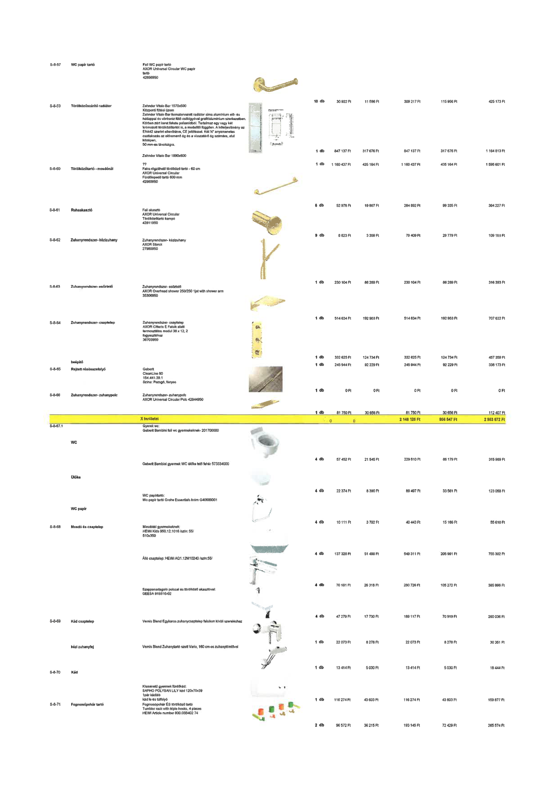

| Tétel | Menny. | Egys. | Anyag e.ár (net HUF) | Díj e.ár (net HUF) | Anyag összesen (net HUF) | Díj összesen (net HUF) | Anyag+Díj összesen (net HUF) |
|---|---|---|---|---|---|---|---|
| S-8-57 WC papír tartó | 10.0 | db | 30 922 | 11 596 | 309 217 | 115 956 | 425 173 |
| S-8-59 Törölközőszárító radiátor (1570x500) | 1.0 | db | 847 137 | 317 676 | 847 137 | 317 676 | 1 164 813 |
| Zehnder Vitalo Bar 1890x600 | 1.0 | db | 1 160 437 | 435 164 | 1 160 437 | 435 164 | 1 595 601 |
| S-8-60 Törölközőtartó - mosdónál | 5.0 | db | 52 978 | 19 867 | 264 892 | 99 335 | 364 227 |
| S-8-61 Ruhaakasztó | 9.0 | db | 8 823 | 3 309 | 79 409 | 29 779 | 109 189 |
| S-8-62 Zuhanyrendszer- kézizuhany | 1.0 | db | 230 104 | 86 289 | 230 104 | 86 289 | 316 393 |
| S-8-63 Zuhanyrendszer- esőztető | 1.0 | db | 514 634 | 192 983 | 514 634 | 192 983 | 707 622 |
| S-8-64 Zuhanyrendszer- csaptelep | 1.0 | db | 332 625 | 124 734 | 332 625 | 124 734 | 457 359 |
| beépítő | 1.0 | db | 245 944 | 92 229 | 245 944 | 92 229 | 338 173 |
| S-8-65 Rejtett résösszefolyó | 1.0 | db | 0 | 0 | 0 | 0 | 0 |
| S-8-66 Zuhanyrendszer- zuhanypolc | 1.0 | db | 81 750 | 30 656 | 81 750 | 30 656 | 112 407 |
| X területei | NaN | NaN | 0 | 0 | 2 148 125 | 805 547 | 2 953 672 |
| S-8-67.1 Gyerek wc | 4.0 | db | 57 452 | 21 545 | 229 810 | 86 179 | 315 989 |
| Ülőke | 4.0 | db | 22 374 | 8 390 | 89 497 | 33 561 | 123 058 |
| WC papír | 4.0 | db | 10 111 | 3 792 | 40 443 | 15 166 | 55 610 |
| S-8-68 Mosdó és csaptelep (Mosdótál) | 4.0 | db | 137 328 | 51 498 | 549 311 | 205 991 | 755 302 |
| Álló csaptelep | 4.0 | db | 70 181 | 26 318 | 280 726 | 105 272 | 385 998 |
| Szappanadagoló | 4.0 | db | 47 279 | 17 730 | 189 117 | 70 919 | 260 036 |
| S-8-69 Kád csaptelep | 1.0 | db | 22 073 | 8 278 | 22 073 | 8 278 | 30 351 |
| kézi zuhanyfej | 1.0 | db | 13 414 | 5 030 | 13 414 | 5 030 | 18 444 |
| S-8-70 Kád | 1.0 | db | 116 274 | 43 603 | 116 274 | 43 603 | 159 877 |
| S-8-71 Fogmosópohár tartó | 2.0 | db | 96 572 | 36 215 | 193 145 | 72 429 | 265 574 |
